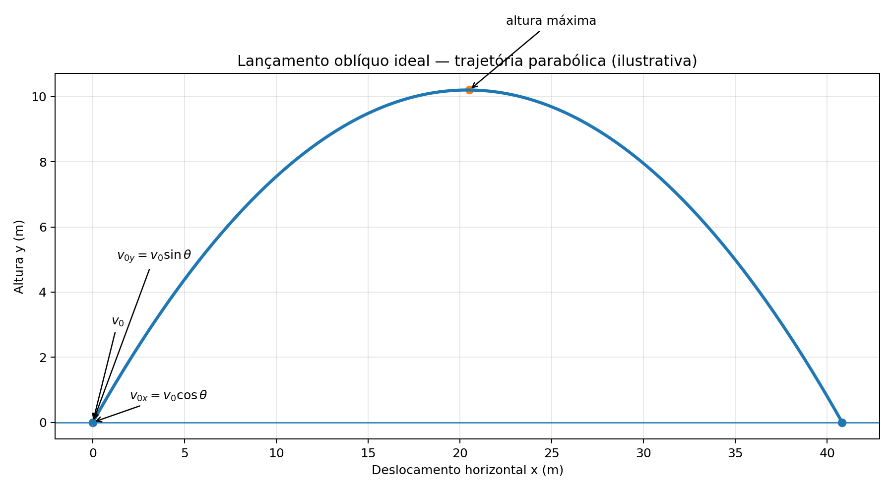
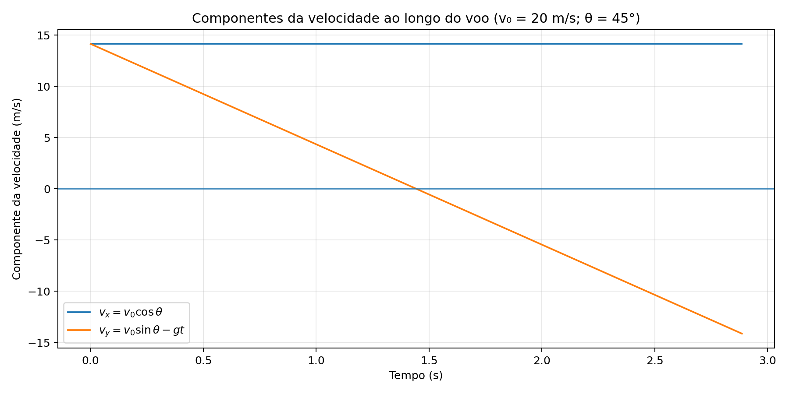

O lançamento oblíquo ocorre quando um corpo é lançado com velocidade inicial inclinada em relação à horizontal. Desprezando a resistência do ar, o movimento combina movimento uniforme no eixo horizontal e movimento uniformemente variado no eixo vertical.
Componentes iniciais: $v_{0x}=v_0\cos\theta$ e $v_{0y}=v_0\sin\theta$.
Posições: $x=v_0\cos\theta\,t$ e $y=v_0\sin\theta\,t-\frac12gt^2$.
Velocidade: $v_x=v_0\cos\theta$ e $v_y=v_0\sin\theta-gt$.
Mesmo nível de lançamento e chegada: $T=\frac{2v_0\sin\theta}{g}$ e $A=\frac{v_0^2\sin(2\theta)}{g}$.
As expressões pressupõem aceleração gravitacional constante e resistência do ar desprezível. As fórmulas de tempo total e alcance indicadas valem quando o projétil retorna à mesma altura de lançamento.
1. O que é lançamento oblíquo?
É o movimento de um corpo lançado com velocidade inicial inclinada em relação à horizontal. Desprezando a resistência do ar e considerando a aceleração da gravidade constante, o movimento pode ser decomposto em dois movimentos independentes: horizontal uniforme e vertical uniformemente variado.
Adotamos o eixo $x$ horizontal, positivo para a frente, e o eixo $y$ vertical, positivo para cima. A origem fica no ponto de lançamento, de modo que $x_0=y_0=0$.

Figura 1: Trajetória ideal parabólica e decomposição da velocidade inicial em componentes horizontal e vertical. O desenho é ilustrativo, não uma escala universal.
2. Decomposição da velocidade inicial
Se a velocidade inicial tem módulo $v_0$ e forma ângulo $\theta$ com a horizontal, suas componentes são:
As componentes são medidas em m/s. O ângulo deve ser medido a partir da horizontal. No modelo ideal, a gravidade atua somente na direção vertical, portanto a componente horizontal da velocidade permanece constante.
$$x(t)=v_0\cos\theta\,t$$
$$y(t)=v_0\sin\theta\,t-\frac{gt^2}{2}$$
Nessas expressões, $t$ é o tempo em segundos, $g$ é o módulo da aceleração gravitacional (aproximadamente $9{,}8\\,\\text{m/s}^2$, ou $10\\,\\text{m/s}^2$ em exercícios que adotem essa aproximação), e $x,y$ são posições em metros.
3. Velocidade e ponto mais alto
$$v_x=v_0\cos\theta \qquad v_y=v_0\sin\theta-gt$$
No ponto mais alto, a componente vertical da velocidade é zero ($v_y=0$), mas a componente horizontal continua diferente de zero, desde que $v_0\cos\theta\\ne0$. Isso significa que o corpo não fica parado no ponto mais alto.

Figura 2: A componente horizontal da velocidade permanece constante; a vertical diminui até zero no ápice e depois se torna negativa.
O alcance $A$ é a distância horizontal entre lançamento e aterrissagem. Para uma mesma velocidade inicial e alturas iguais, o alcance máximo ocorre em $45^\\circ$ no modelo sem resistência do ar. Ângulos complementares (como $30^\\circ$ e $60^\\circ$) produzem o mesmo alcance ideal.
Atenção: se o corpo aterrissa em altura diferente da inicial, não use automaticamente as fórmulas de tempo total e alcance acima; determine o tempo pela equação vertical e depois calcule $x(t)$.
4. Equação da trajetória e erros comuns
Eliminando o tempo das equações horárias, obtemos:
Como a equação é quadrática em $x$, a trajetória é parabólica nas condições ideais. Erros frequentes: usar seno e cosseno trocados; supor que a velocidade total é zero no ápice; esquecer que a gravidade aponta para baixo; usar alcance de alturas iguais em lançamento de uma plataforma; misturar unidades.
💡 Física em Ação: onde aparece o lançamento oblíquo?
Esportes
Trajetórias de bolas em chutes, arremessos e lançamentos podem ser aproximadas pelo modelo de projétil, especialmente em trajetos curtos.
Jatos e fontes
A água que sai inclinada de um bocal descreve uma trajetória curvada pela gravidade, embora a resistência do ar e a interação com o fluido possam alterar o movimento real.
Limites do modelo
O modelo ideal ignora o arrasto do ar e considera $g$ constante. Em situações reais, essas aproximações podem não ser suficientes.
Exercícios resolvidos (R1 a R5)
R1 — Componentes da velocidade
Enunciado: Uma bola é lançada a 20 m/s, formando 30° com a horizontal. Determine as componentes iniciais. Adote $g=10\,\text{m/s}^2$.
Resolução: Dados: $v_0=20\,\text{m/s}$ e $\theta=30^\circ$. $v_{0x}=20\cos30^\circ=10\sqrt3\approx17{,}3\,\text{m/s}$ e $v_{0y}=20\sin30^\circ=10\,\text{m/s}$.
R2 — Tempo de subida e altura máxima
Enunciado: Um projétil é lançado a 20 m/s com ângulo de 30°. Calcule o tempo de subida e a altura máxima, com $g=10\,\text{m/s}^2$.
Resolução: A componente vertical inicial é $10\,\text{m/s}$. $t_s=v_{0y}/g=10/10=1\,\text{s}$. $H=v_{0y}^2/(2g)=100/20=5\,\text{m}$.
R3 — Tempo de voo e alcance
Enunciado: Um objeto parte do solo a 25 m/s e 53° com a horizontal. Use $\sin53^\circ=0{,}8$, $\cos53^\circ=0{,}6$ e $g=10\,\text{m/s}^2$. Calcule tempo total e alcance.
Resolução: $v_{0y}=25(0{,}8)=20\,\text{m/s}$ e $v_{0x}=25(0{,}6)=15\,\text{m/s}$. Como retorna à mesma altura, $T=2(20)/10=4\,\text{s}$. O alcance é $A=v_{0x}T=15(4)=60\,\text{m}$.
R4 — Posição em um instante
Enunciado: Um projétil é lançado a 10 m/s sob 30°. Determine suas posições horizontal e vertical após 1 s. Use $g=10\,\text{m/s}^2$.
Resolução: $v_{0x}=10\cos30^\circ=5\sqrt3\,\text{m/s}$ e $v_{0y}=5\,\text{m/s}$. Após 1 s, $x=5\sqrt3(1)\approx8{,}66\,\text{m}$ e $y=5(1)-5(1)^2=0\,\text{m}$. Nesse modelo, o corpo já retornou à altura inicial.
R5 — Velocidade no ponto mais alto
Enunciado: Uma bola é lançada a 30 m/s, a 60° com a horizontal. Determine o módulo da velocidade no ponto mais alto.
Resolução: No ápice, $v_y=0$. A componente horizontal permanece $v_x=30\cos60^\circ=15\,\text{m/s}$. Portanto, o módulo da velocidade no ponto mais alto é $15\,\text{m/s}$, não zero.
Exercícios propostos (P6 a P15)
P6 — Decomposição
Enunciado: Um chute imprime velocidade de 12 m/s a 30° da horizontal. Calcule $v_{0x}$ e $v_{0y}$.
Enunciado: Uma bola é lançada do solo com $v_0=25\,\text{m/s}$ e ângulo de 37°. Use $\sin37^\circ=0{,}6$ e $g=10\,\text{m/s}^2$. Determine o tempo total.
Enunciado: Um projétil tem $v_{0y}=18\,\text{m/s}$. Qual é $v_y$ após 2 s, adotando $g=10\,\text{m/s}^2$?
Resolução: $v_y=v_{0y}-gt=18-20=-2\,\text{m/s}$. O sinal negativo indica movimento vertical descendente.
P13 — Alcances iguais
Enunciado: Em condições ideais, lançamentos com mesma velocidade inicial e ângulos de 30° e 60° retornam à mesma altura. Compare os alcances.
Resolução: São iguais, pois $\sin(2\cdot30^\circ)=\sin60^\circ$ e $\sin(2\cdot60^\circ)=\sin120^\circ=\sin60^\circ$.
P14 — Altura em instante
Enunciado: Um objeto é lançado com $v_{0y}=14\,\text{m/s}$. Calcule sua altura após 1 s, com $g=10\,\text{m/s}^2$.
Resolução: $y=v_{0y}t-gt^2/2=14-5=9\,\text{m}$.
P15 — Verdadeiro ou falso
Enunciado: Avalie: (a) $v_x$ varia pela gravidade; (b) a trajetória ideal é parabólica; (c) no ápice $v_y=0$.
Resolução: (a) Falso: sem resistência do ar, $v_x$ é constante. (b) Verdadeiro. (c) Verdadeiro.
Testes (T16 a T20)
T16 — (ExataSite) Componentes
Um projétil é lançado a 10 m/s e 30° da horizontal. A componente vertical inicial vale:
A) 5 m/s B) 5√3 m/s C) 10 m/s D) 20 m/s E) 0 m/s
Gabarito: A. $v_{0y}=v_0\sin30^\circ=10(0{,}5)=5\,\text{m/s}$.
T17 — (ExataSite) Ápice
No ponto mais alto de um lançamento oblíquo ideal:
A) $v_x=0$ e $v_y=0$ B) $v_y=0$ e $v_x$ constante C) a aceleração é zero D) a velocidade é vertical E) a gravidade aponta para cima
Gabarito: B. No ápice, a componente vertical é nula por um instante; a componente horizontal permanece constante e a aceleração continua sendo a gravidade para baixo.
T18 — (ExataSite) Alcance
Um projétil retorna à altura de lançamento com velocidade inicial de 20 m/s a 45°. Use $g=10\,\text{m/s}^2$. Seu alcance é:
A) 10 m B) 20 m C) 30 m D) 40 m E) 80 m
Gabarito: D. $A=v_0^2\sin90^\circ/g=400/10=40\,\text{m}$.
T19 — (ExataSite) Movimento horizontal
Desprezando o ar, a componente horizontal da velocidade de um projétil durante o voo:
A) aumenta uniformemente B) diminui uniformemente C) permanece constante D) é sempre nula E) muda de sinal no ápice
Gabarito: C. A aceleração gravitacional é vertical. Não há aceleração horizontal no modelo ideal, então $v_x$ permanece constante.
T20 — (ExataSite) Tempo de voo
Um projétil é lançado do solo com componente vertical inicial de 20 m/s e retorna ao mesmo nível. Para $g=10\,\text{m/s}^2$, o tempo total é: